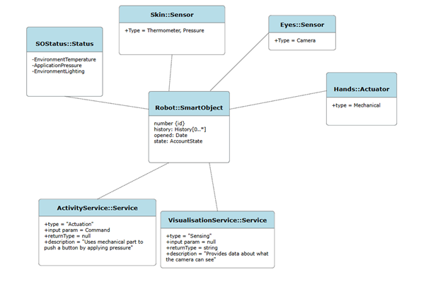

Discussion Topic: OO Design for IoT
Making reference to the article by Fortino et al. (2015), consider the strengths and weaknesses of designing a metamodel to support object-oriented design of the IoT. Design a smart model equivalent to that presented in Figure 6 which would instead support operation of a humanoid robot.
Designing a metamodel in the context of object-oriented design is a complementary concept, as having a basic structure that can be used as a foundational architecture while leaving room for alteration. The simplicity allows for a good communication of the design while also providing important context and specifications. The structure also provides a certain degree of flexibility to allow for changes throughout the design cycle.
Metamodels can be used to help identify and convey parts of the code which can be reused or restructured in a way that supports object-oriented design more.
The weakness of metamodels is that it requires the skill and understanding of how to read the diagram as overall the designs tend to be more complicated than other possible models such as Unified Modelling Language (UML).
Another consideration is the cost. In a huge scale project that evolves rapidly, maintaining and updating the model would require significant time and effort for each iteration. This could slow down development, overall increasing cost.
With everything in consideration, depending on the complexity and requirements of the project, metamodels have the potential to be a useful tool that helps throughout the software development cycle as opposed to other models. This is more prevalent in projects with complex and changing requirements. This usage of metamodels, however, should be considered based on the needs of a project, as other types of models can be more efficient or simply less complicated to use.
Below is an example of a metamodel for a basic humanoid robot.
Fortino, G. et al. (2016) ‘Towards a Development Methodology for Smart Object-Oriented IoT Systems: A Metamodel Approach’, in Proceedings - 2015 IEEE International Conference on Systems, Man, and Cybernetics, SMC 2015. Institute of Electrical and Electronics Engineers Inc., pp. 1297–1302. Available at: https://doi.org/10.1109/SMC.2015.231.
Reflection
When comparing other peers' metamodel structures towards my own, overall, my design is lacking in information such as the core details as well as basic features. In terms of consensus about the usage of metamodels, everyone agreed that they should be used with consideration in mind, as the flexibility of the models results in more maintenance and complexity in a project. Overall metamodels can be a very useful tool that can be used depending on the situation. Everyone however had highlighted different parts of the pros and cons that they decided to put an emphasis on, such as cost as opposed to complexity.